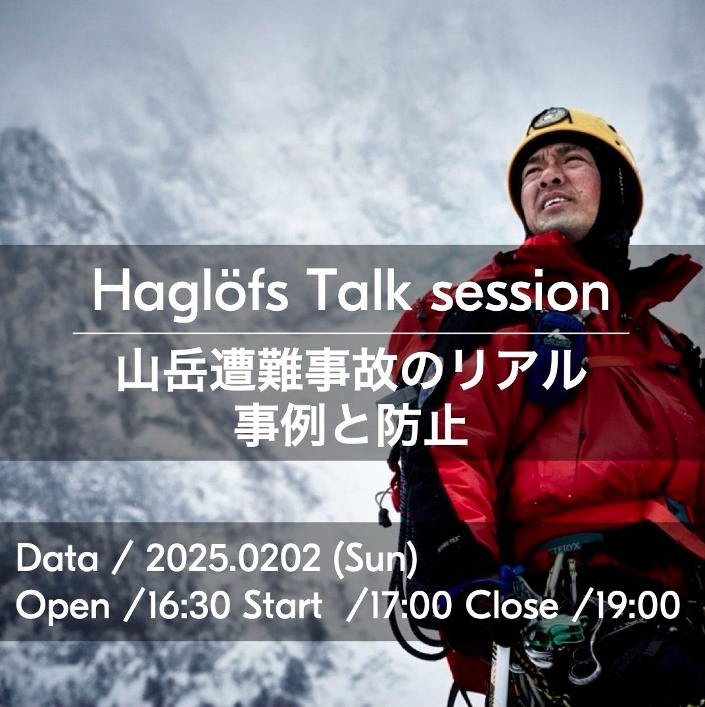
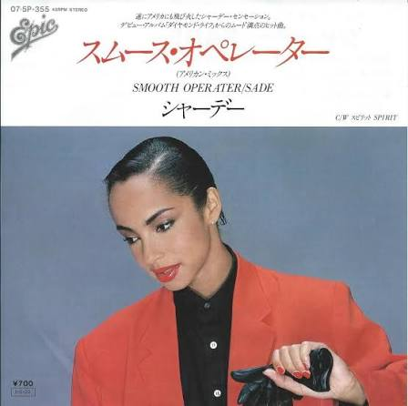
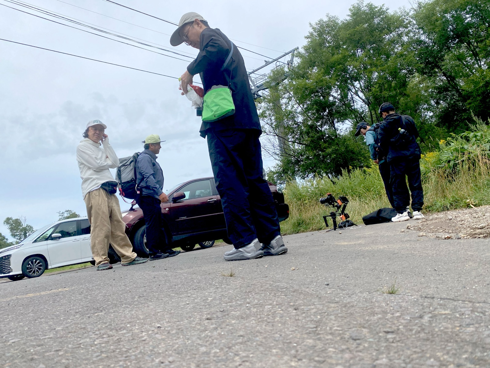
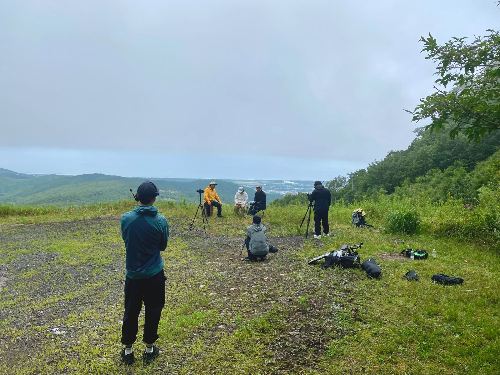

前回の仁科正史編の熱狂と同時に、本セッションも企画していたものの、そこに辿り着くまでの裏側は、見事なまでに水前寺清子超えの、3歩進んで3歩下がる。右往左往の連続だ。
編集後記
「汝、北へ。」
Place: 株式会社まなか 銀座オフィス
Words: 荒井 道広
荒井、再び大地に立つ。完全なるトンザを乗り越え、北へと導いたのは、新橋のハイボールと、諦めの悪さ。 「死を、教えてくれ。〜三浦豪太〜」 編集後記
——胎動は、1年前の試飲会から始まっていた。
2025/07/24
すべての原点は約1年前、友人・清水マーフィーからの連絡だ。
彼がアンバサダーを務める徳島県・上勝町が東麻布に出展する新店舗「KAMIKATZ TAPROOM」のビール試飲会に誘われた。 「面白い人がいるから」と彼が誘い、その場で初めて出会ったのが、Hoglofsブランドの三浦。
多彩なクラフトビールを飲みながら、彼がよく行く雪山、群馬県・谷川岳の話もしたり、他愛もない会話を交わしたあの日—— まさかこの出会いが、1年後に自分の命運を分ける巨大な伏線になるとは、この時は夢にも思っていなかった。
2026/01/22
ふと、新井孝之さんという谷川岳の山岳警備隊をやっている方が目に止まり、なんだかスゲー事やってるな、この人。僕のいとこは荒井孝之で勝手に親近感を抱く。あ〜こんな人と企画を進めたいなと思いみていると、渋谷でトークショウしてるじゃん。
主催を見るとなんと、あの、北欧のアウトドアブランドの雄が刻まれていた。

Yes! Hoglofs!
しかも新井さんは筋金入りのウインタースポーツ愛好家でBurtonファン。
彼のInstagramには元上司の姿も確認。
そう、僕はこの時点で全てを悟り、こう思う。
「もう…整ってるじゃんか笑」
Hoglofsの三浦さんとはあれ以来連絡をしていないので、まずは清水マーフィーに相談し、企画趣旨を説明して三浦さんへと繋いでもらう。その後すぐに三浦さんに説明し、電話でフォローUP！ 彼はすぐに新井さんを繋いでくれ、僕 荒井が直接企画趣旨を説明する。
新井さんはすぐに理解してくれ、さらに言う。これは個人として受けるのか、警察官として受けるのかで内容に温度差がでます。警察官としてならば、いままでの救助活動などの内容もお話しできますよ、と。警察官として、と相談すると「勿論、警察官としての立場でもよければ」とな〜んて温かい返事が。「残雪の一ノ倉沢でやりましょう」なんて話はトントン拍子に進む。
電話を切った。もはや確定だ、心の中にはこんな曲も流れている。

ここから、滑落が始まる——。
2026/02/27
新井さんの指示通り、群馬県広報広聴課に取材依頼を提出。
社内及び編集チームのスケジュール調整に入った、最終段階の矢先。新井さんから連絡が入る。彼の所属上司より「今回の取材依頼はお断りと広報広聴課が判断した」と告げられたとのこと。まさか——。僕にも群馬県警から電話が入っていたのですぐに折り返しの電話を入れた。
「いや〜営利企業に彼を使えないんですよね〜」
明るく柔らかいがも、その意思は固く淡々と聞こえる。
……手応えがあった分、目の前が真っ暗になり、僕に暗い間が訪れる。
2026/03/03
戻された企画書を「社内研修」という形にて企画を再構築し、4つの柱（目的・社会的意義・現場優先・リスク排除）を書き上げて再提案するも、3月6日、「中立公正な公務員として企業研修は許可できない」と撃沈。新井さんのルートは完全に崩れ、塞がってしまう。
2026/3/17
企画が振り出しに戻ったその日の夜。新井さんとのやり取りの中で、Elevate Outdoor Collective Japanが主催するBack Countly Meetingに参加したという話を思い出す。
ふと頭をよぎったのが、Burton Snowboards 時代からの同僚で Sales を張っていた中河勇真の存在。「確かユーマ君、今EOC JapanのMarketing Directorだったな」相談も兼ねて神田の居酒屋、馬喰ろうに集合し、ハイボール片手に、ユーマ君に愚痴混じりにこれまでの経緯と絶望を話していると、決定的な一言を放つ。
「荒井ちゃんさ、豪太さん知ってる？ 三浦豪太。絶対良いと思うわ」
2026/8/25
ここから這い上がった。温存しておいた熱量をこの出会いに集中した。豪太さんへのアプローチとミーティング。書き換えた何回ものシナリオ…思い出すと思考が止まってしまう。
1年前の「KAMIKATZ TAPROOM」での、三浦さんとの出会い、県警の壁、」ユーマ君の一言。全ての点が結びついたこの日、僕は圧倒的な北の大地へと向かう飛行機の中にいた。
豪太さんは、連絡が取れない人だった。
出発前週の金曜日も、前日の月曜日も連絡は取れなかった。
そう、当日のフライト前も。フライト後も。
札幌に向かう快速エアポート車内で、ようやく、豪太さんのマネージャーからの電話が来た。恵庭駅付近だが構わず電話に出る。（出るでしょこの際）
「あ、荒井さん、豪太から連絡ありました〜？」
いやきてないんですって…
札幌駅で、意を決して豪太さんに再コール——。
「……もしもしーあぁーこんにちはーー」
…おい！！豪太さんっ笑！！
僕は足取り軽くレンタカーを借り、更に北へと、車を走らせた。
整ったプロットも、予定調和も無い。
群馬県警の分厚い壁に盛大に跳ね返され、新橋のハイボールの泡とともに頭を抱え、キワより、仲間とのつながりで揺り戻された。そのカッコ悪いほどの右往左往と泥臭さのなかでしか掴めない実感こそが、この企画の原点かもしれない。
正解の無いドキュメンタリーが、石のように、予測不能に転がりながら、動き出す——。

